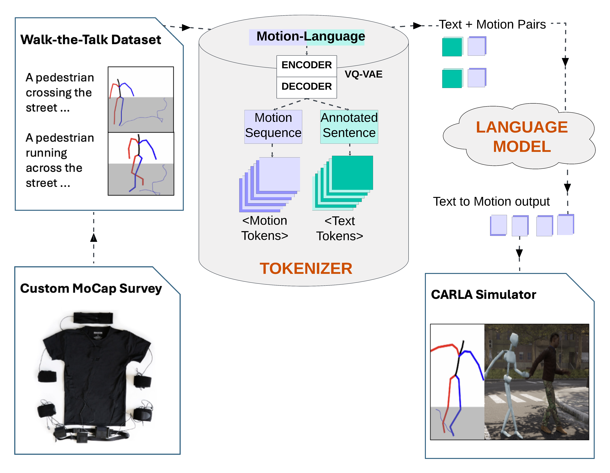

Walk-the-Talk Framework Overview

Exploring the capabilities of Walk-the-Talk and its potential applications in autonomous systems, robotics, and animation.
A non attentive pedestrianExample prompt: A pedestrian crossing the street sudden stops upon encountring an oncoming vehicle from the left, stops, apologies and gives way by making hand g[...]
Cop monitoring an accidentExample prompt: A person waving their right hand acknowledging and guiding a vehicle
A jaywalker emerging between parked vehiclesExample prompt: A jaywalking pedestrian crosses the street while looking both ways, sudden stops upon encountering an oncoming vehicle from the left, apologises [...]
An intoxicated VRU causing nuisanceExample prompt: A drunk pedestrian on the street performs random intoxicated motion.

In the field of autonomous driving, a key challenge is the "reality gap": transferring knowledge gained in simulation to real-world settings. Despite various approaches to mitigate [...]
@INPROCEEDINGS{10588860,
author={Ramesh, Mohan and Flohr, Fabian B.},
booktitle={2024 IEEE Intelligent Vehicles Symposium (IV)},
title={Walk-the-Talk: LLM driven pedestrian motion generation},
year={2024},
volume={},
number={},
pages={3057-3062},
keywords={Legged locomotion;Training;Pedestrians;Generative AI;Large language models;Semantics;Motion capture},
doi={10.1109/IV55156.2024.10588860}}
}